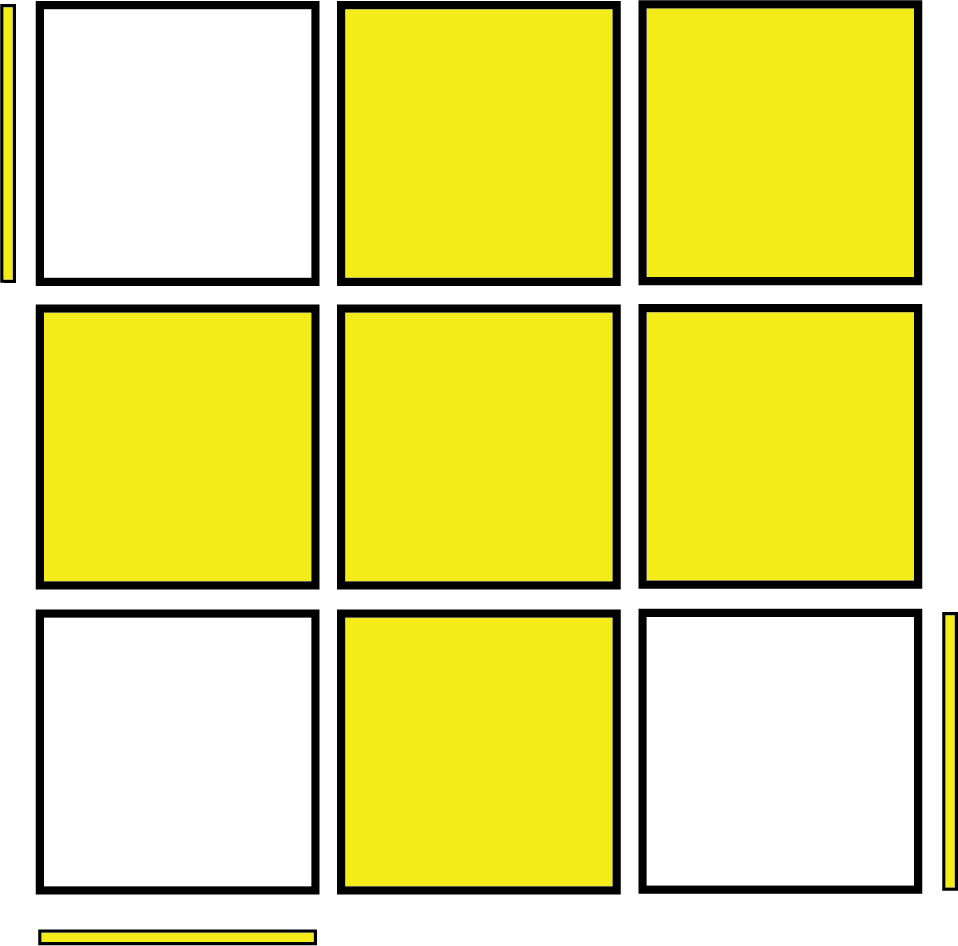
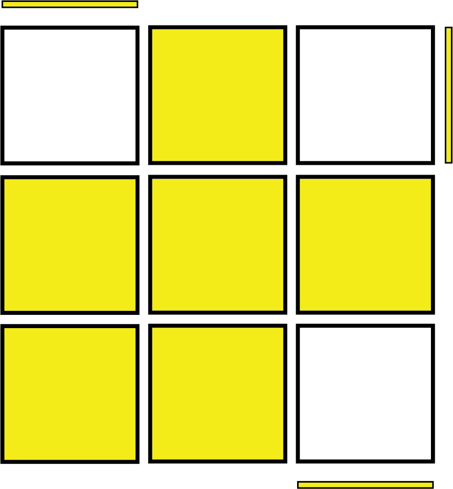
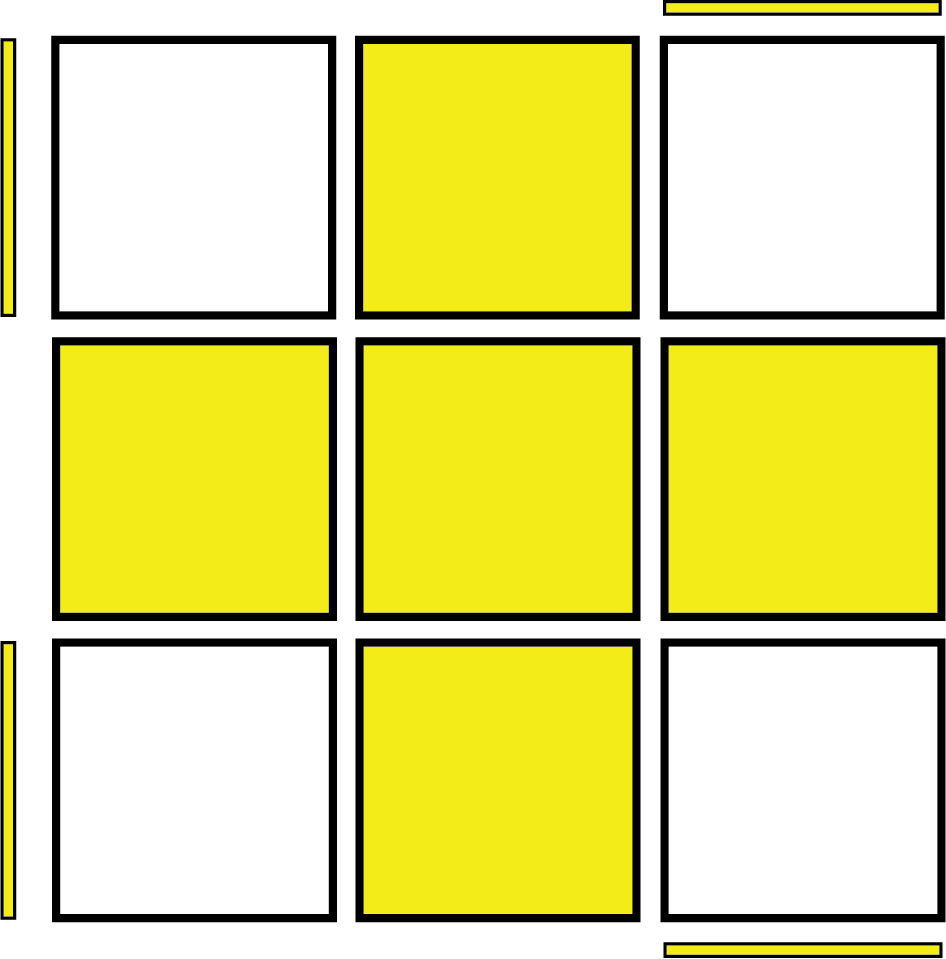
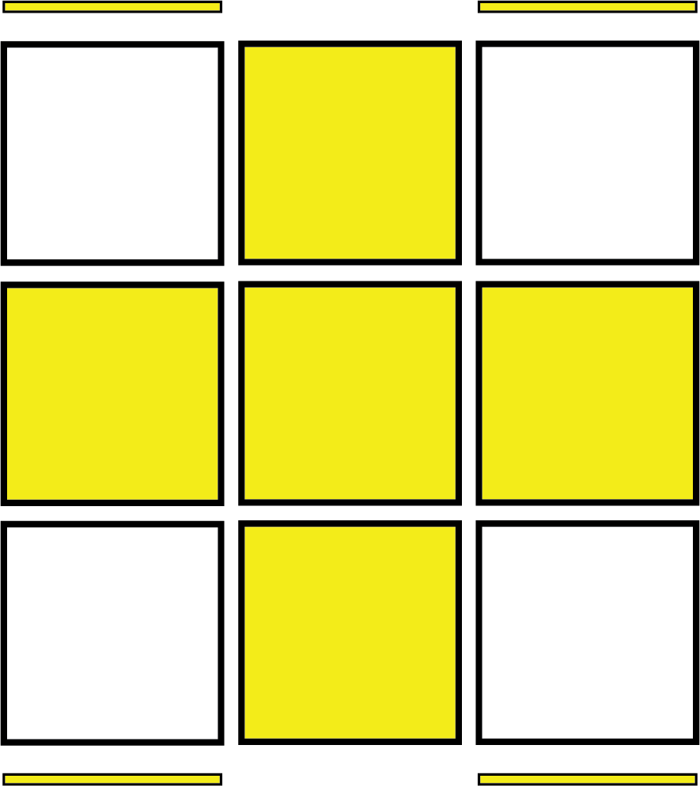
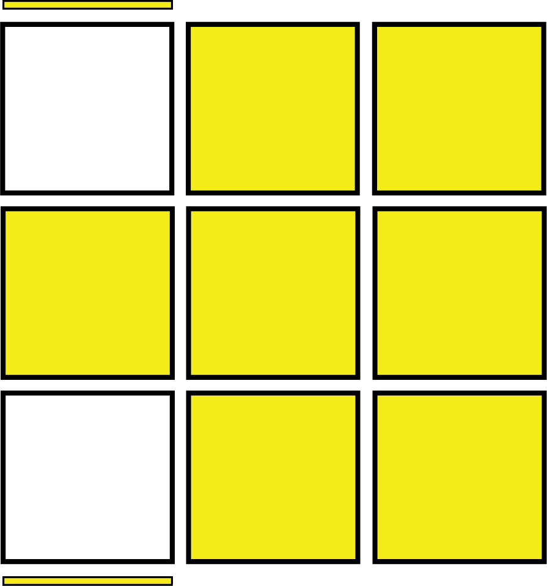
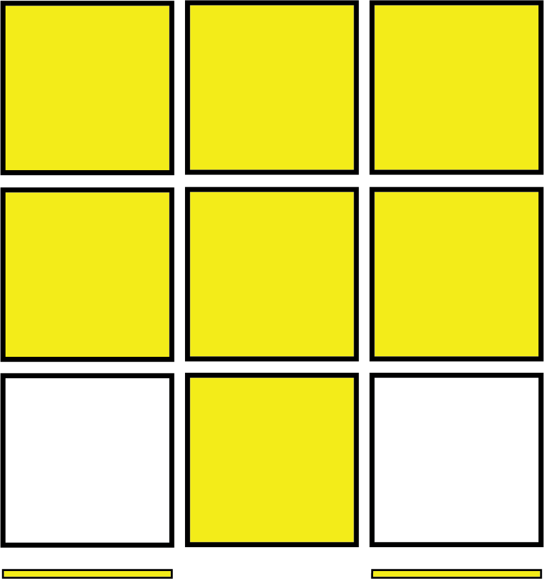
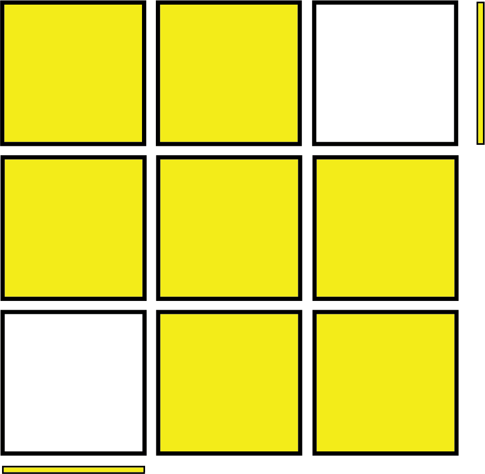

From this step onwards, this guide will not be convering the traditional Beginner's method last layer anymore, instead, we will be covering beginner OLL and PLL (also known as 2-look OLL/PLL). This is because beginner OLL and PLL are much faster than the alternative methods, and are also partly used in the advanced CFOP method, making full CFOP Last Layer (TM) much easier to learn later on.
There are 7 cases in the second part of 2-look OLL, which are the same as the 7 cross cases in full OLL. (You don't really need to know that though). If you cannot remember 7 algorithms for each of the cases, you can just remember the algorithms for the 'Sune' and "Anti-Sune cases.
Read the rest if you want to use the method where you only learn 2 algorithms: If you only want to learn the 'Sune' and 'Anti-Sune' algorithms, you will need to do the Sune algorithm on any case that isn't the Anti-Sune case. (You can tell which case it is when the corner orientation lines up with the case diagram). Do not realign the cube to match the cases, just keep repeating the algorithm mindlessly. Stop doing the Sune algorithm when there is only one yellow corner facing up after the algorithm. This means that this is a Sune or Anti-Sune case, and you would turn the cube so that the corners match up with the diagrams, and use the algorithm to finish the step.
(There is probably a better way to do this, but I don't really want to figure it out. This took long enough to think of as is, and nobody is going to use this guide for real anyways.)
Sune and Anti-Sune:
 Anti-Sune: (R U2 R' U') (R U' R')  Sune: (R U R' U) (R U2 R')
Everything else:
 Pi-OLL: R U2 (R2 U' R2 U' R2) U2 R  H-OLL: F (R U R' U') (R U R' U') (R U R' U') F'
 T-OLL: (r U R' U') (r' F R F')  U-OLL: R2 D (R' U2 R) D' (R' U2 R')  L-OLL: (F R' F' r) (U R U' r')
I created the images along with everything else on this page myself, so everything on this webpage is definitely copyright free and free to use. I am adding this to the bottom of every page to show off the fixed position navigation bar on shorter pages, and it also makes the website look more professional.